Green Oasis
A competition project developed with Galeotti Rizzato studio, 2016-2017
The project was developed as part of an architectural competition for the new headquarters of Kommerling, a company specialized in the production of PVC window and door systems. The brief required the design of a **sustainable and high-performance building**, adjacent to the existing production facility, with modern workspaces integrated into the surrounding industrial landscape.
The new Kommerling office building is located to the north of the existing factory, from which it is separated by a concrete plaza punctuated with tree-lined planting beds.
The building is laid out on a single level and organized around a large central glazed courtyard. All interior spaces—including offices, meeting rooms, showroom, library, and informal gathering areas—face this central space. The architectural form is characterized by faceted façades and roof geometry. The elevations facing the courtyard are fully glazed, using Kommerling PVC profiles. The outer façades are clad in perforated oxidized copper panels, interrupted only by five glazed openings that function as emergency exits and bring greenery into the architecture through small planted areas.
The program follows a linear layout: on the north side are the main entrance, lobby, and informal meeting spaces. A longitudinal corridor connects all rooms and is glazed toward the courtyard, ensuring natural light and visual continuity.
The total surface area of the building is 970 m², with interior heights ranging from 3.5 to 6 meters, in compliance with building codes for administrative and service areas.
Structurally, the building is composed of a continuous reinforced concrete frame along the perimeter. The internal partition walls are load-bearing. The interiors are finished in white-painted exposed concrete, and all mechanical systems are left visible to allow easy maintenance and emphasize functionality.
The project incorporates advanced energy strategies: natural wood fiber insulation, ventilated copper façades, rainwater harvesting, solar panels, and a heat pump-based climate control system.

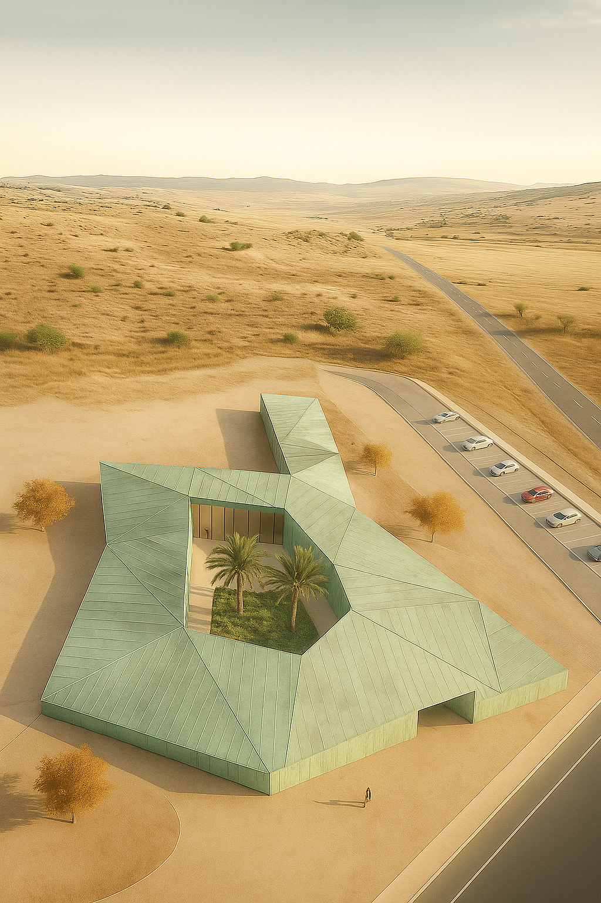
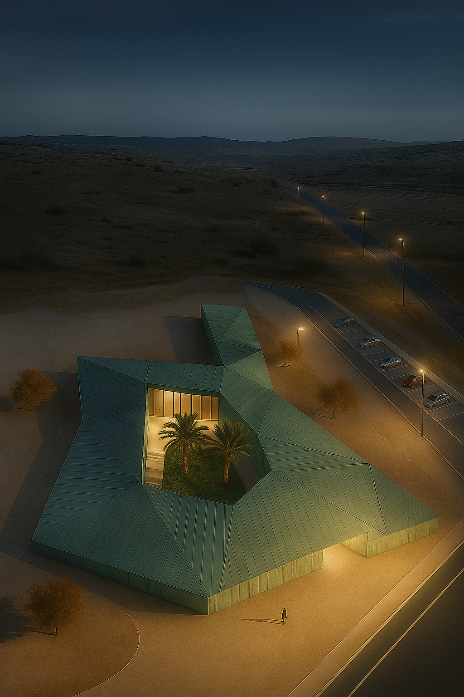
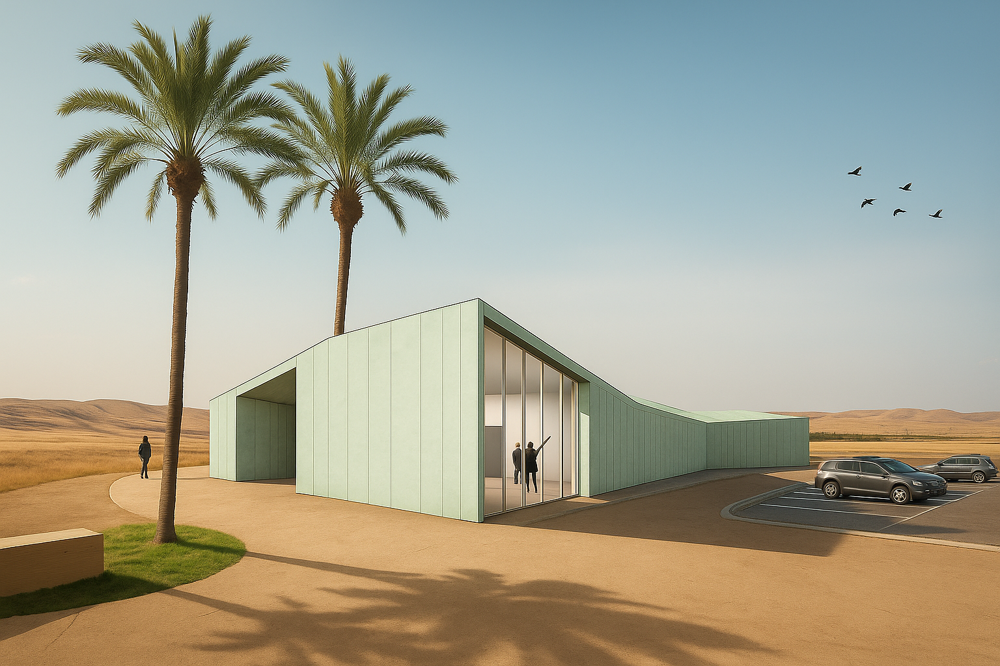
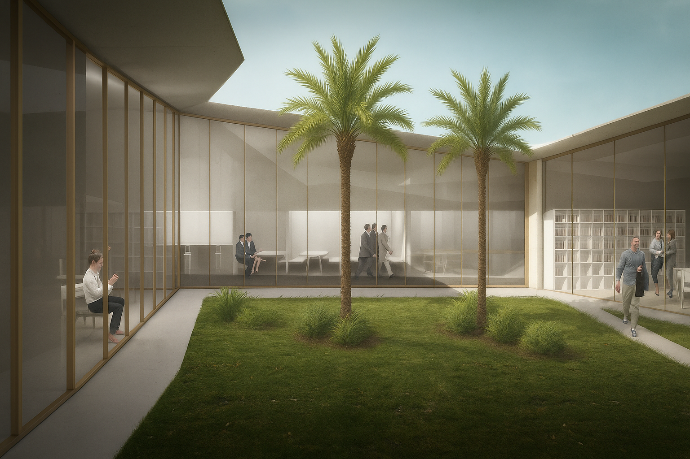
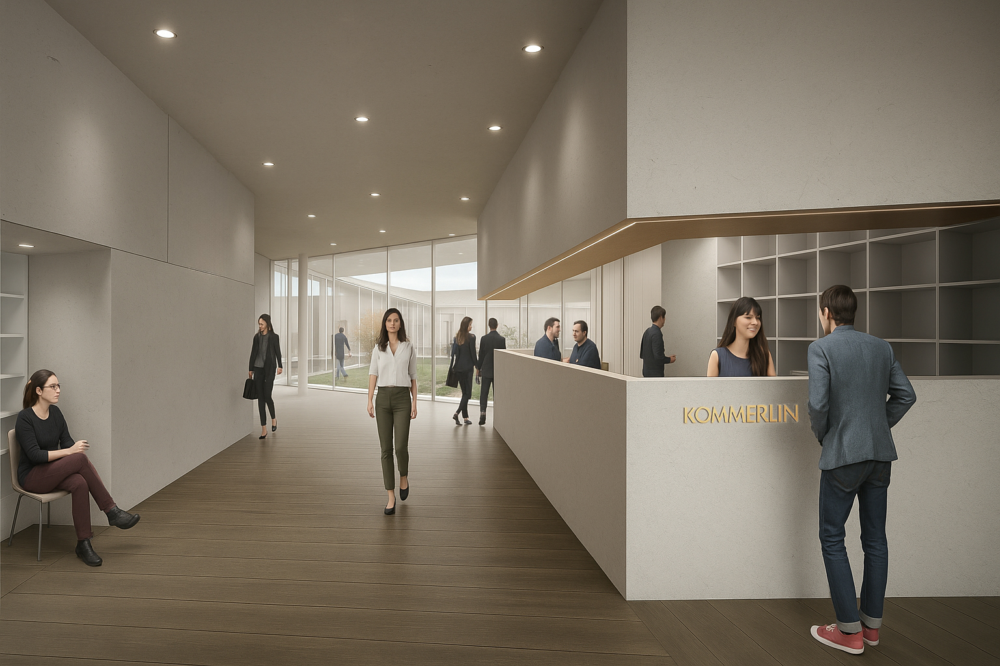
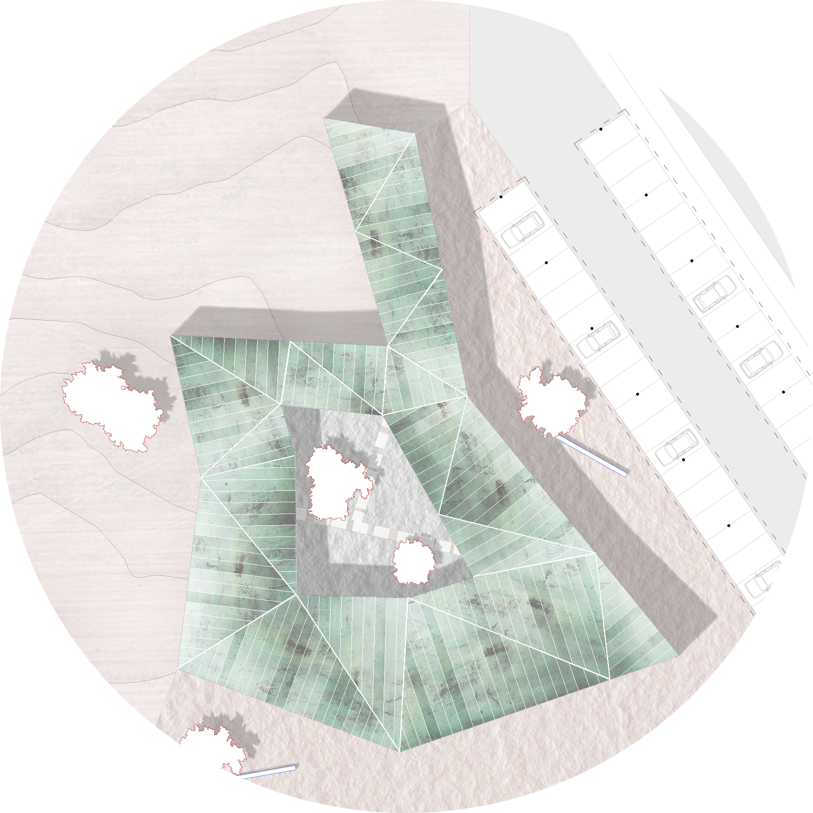

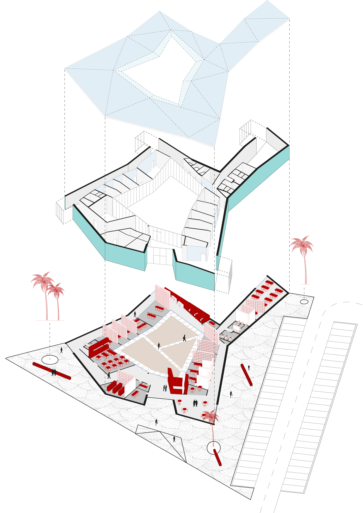
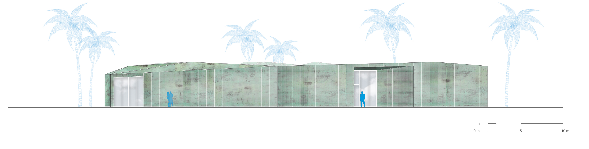
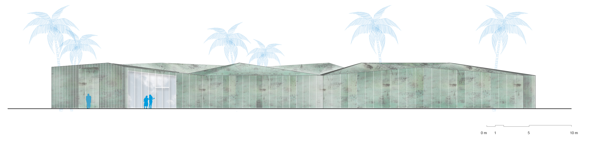
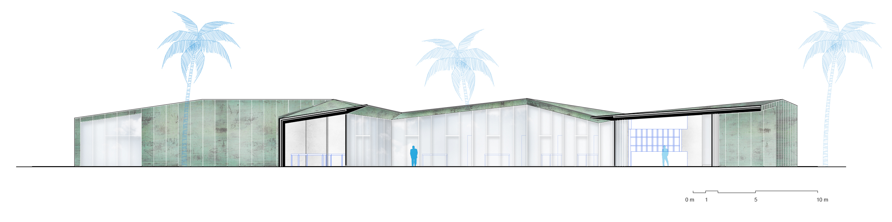
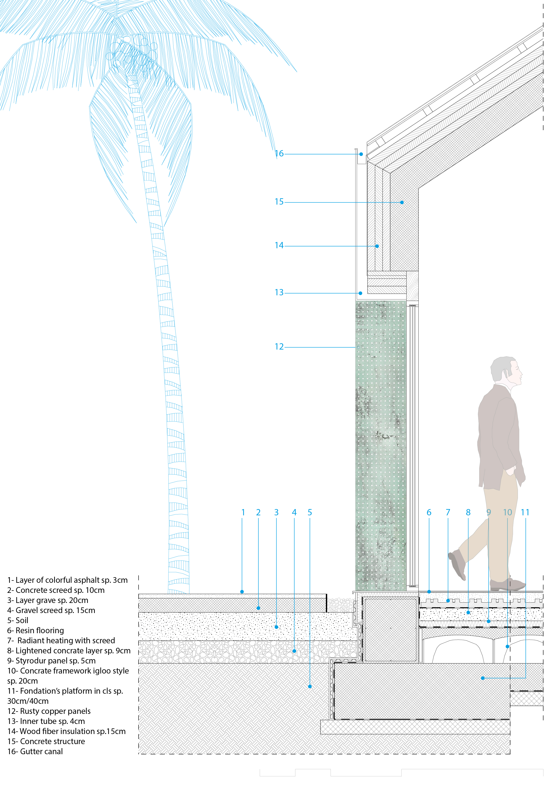